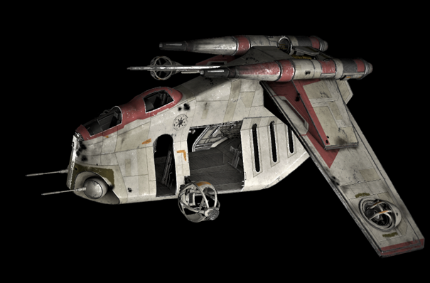

Evening troopers, this guide is for you and your higher-ups to read and learn how to handle the ships that keep you and your troops alive and fighting.
LAAT is used for troop transport and close air support, can also be used to commit “Japanese” love taps (aka 5 big boom)
LAAT is mostly used with the helicopter flight system so handle it like you would any topside rotor aircraft, it is large and in charge so handle with care and do NOT overcompensate. You must slowly adjust the ship till it levels out and flies straight. When transporting troops you must make sure you land before you give the green light for them to drop (unless you are airborne) when taking fire or see/hear missile lock you must deploy flares and make evasive maneuvers. When dogfighting another transport ship it's best to be above or below, never at the same altitude. You will have a less strategic advantage when you are at the same altitude.
When transporting whatever unfortunate souls happen to be in your transport (specifically airborne) they have certain steps that they must follow in their jump routine. To ensure the successful transport, deployment, and regrouping of the airborne troops they use route codes. There is a five step procedure for airborne deployment that you as a pilot follow.
When you get the “All in, dust” call from the troop compartment you will take off and begin bringing your payload towards the drop zone. You will promptly say “Dusting” before taking off.
When you are about halfway to the drop zone you will say “Red light” this tells the airborne that it is time to be quiet and begin looking at landmarks and surveying the ground.
When you are one third of the way to the drop zone you will say “Red light” again, this second prompt is a preparatory for the jump signal, and also a signal to say that you are working on bleeding off speed.
When you are just in front of the drop zone and you have bled off some of your speed you will say “Green, jump, jump, jump” this is the signal to jump. As the airborne are jumping you will need to deploy flares and maintain your speed and direction.
Once you have heard “Jumpmaster out” or “Jumpmaster” that means that all airborne have disembarked and it is time to leave. Promptly turn around and run back to base where you can refuel and continue operations.
Countermeasures suck, and lest you want to be blown out of the sky by a manpad (that is to say a man portable anti-air piece) you will want to learn how to avoid a lock. The best thing to do is “jinking.” Jinking is an evasive maneuver characterized by random and unpredictable movements. Drastic changes in direction will break any lock on, or attempts to lock onto, your aircraft. This and simultaneous deployment of flares should keep you safe. To keep yourself safe and prevent any hostile elements from effectively locking onto flying low altitude and using the mountains to break line of sight is also a safe bet.
Immediately after getting into your cockpit you have a number of things to do before taking off. A pre-flight checklist per se. First checks should be comms and drift. Make sure your discord audio inputs are correct and you can both speak and hear on the comms, and DO NOT FLY WITHOUT BEING IN COMMS. Then check that any controller drift you have will not prohibit you from deploying flares. To perform a comms check you will join a channel and say “2-(Insert LAAT Number), radio check, radio check” assuming that your microphone is working you’ll hear someone respond letting you know that your microphone is working. After this you will try to hold your selector to the flare option for 10 seconds. If you cannot hold it for 10 seconds you are not good on flares. After this you will bring thrust to half and inch it up slowly just until you begin to lift off of the ground, that is your engine check. Your final check is your gun check. You will orient the aircraft horizontally, away from any infantry, and fire a 5 second burst. If you see the bolts then that means your guns are good. After you finish pre-flight checks you should wait for the infantry to board and then you may disembark. Do not provide fire support while transporting troops. If you want to drop bombs on the X you should RTB and then disembark specifically for your fire mission.
In armed conflict combined arms is a major strength, if not the only guaranteed way to ensure victory. Thus the use of air-ground gun, smoke, or missile runs is necessary. This will be a short comprehensive guide of how to provide ground support as an air unit.
The first step in any air support maneuver is your approach. With any strike (with the exception of a AGM bombing, carpet bombing, or dive bombing runs) you will want to drop altitude and bleed off speed on your approach. On a gun run you will want to perform a J-Hook and hover in place, effectively allowing you to put rounds on target.
In a missile run you will approach the same way as on a gun run, but before your hook you will place a couple rounds down to get a reference as to where your round will land. You will perform your hook but instead of hovering you will begin a sideways movement around the objective at a considerable distance so you can place missiles down without gaining too much forward momentum.
In an AGM strike your approach is high altitude. You will perform anywhere from one to run to two. If you can slow your approach enough to acquire your target and maintain a far enough distance from the objective to get an accurate bomb off then that is both appreciated and very impressive. Normally your first pass will be to acquire your target, and your second pass will be to drop your payload. If you pass too high it is recommended that you gain further altitude, cut all throttle, dive down at a 80-100 degree angle, launch your bombs before you hit the ground, go to full power and level out. This is known as a dive bomb.
High altitude approach. You will line the X up on the center of your view and drop your payload around the same time you would drop any airborne.
Made by John pilot (Seth). If you have any questions make sure to ask Private Iudex or Zenobu. Happy trails